Visual analytics systems must
capture this information and facilitate its presentation in ways
that meet the needs of the recipient of the information.
Its very
important to quickly identify competing explanations and chains
of reasoning for the issue under study and actively maintain
awareness of those competing idea so that they are kept “alive” as analytic
possibilities.
Often the
most plausible explanation will be researched extensively,
analysts should always revisit the key alternatives. Visual
analytics tools must facilitate the analyst’s task of actively
considering competing hypotheses.
Another
important analytic technique is the enumeration and testing of
assumptions. Explicit representation of these
assumptions facilitates this process.
want 'constant' feedback from the visualization application:
~100 milliseconds. Bare minimum update rate to perceive smooth
animation (50 ms is a better minimum)
~1 second. Simple user actions (bringing up a menu, making a
menu selection, etc) should get a response or some feedback
(progress bar appears) within this time.
~10 seconds. More complex user actions (generating a
new view of the data, doing a complex query) should get a
response or some feedback (progress bar appears) within this
time.
~100 seconds (minutes to hours). Higher level reasoning
processes, including the analytic reasoning take place in this
time frame.
Issues with streaming data
- Provide situational awareness
for data streams.
- Show changes in the state of
the system and help users identify when the changes are
significant.
- Fuse various types of
information to provide an integrated view of the
information.
One part of this process that we haven't talked much about is
the reporting phase - taking the results of an analysis and
presenting them to the target audience.
Discussion of the
Challenger disaster with refs from Tufte's "Visual
Explanations."
The Challenger example gets
talked about a lot in terms of ethics and responsibility and
there are various views on the topic. One lengthy critique of
Tufte's conclusions (which brings up several very important
points but also reads into Tufte's work an attitude that I do
not feel while reading it) is given here:
http://www.onlineethics.org/cms/17453.aspx
Just for reference, here is a
photo of Atlantis on the launch pad:
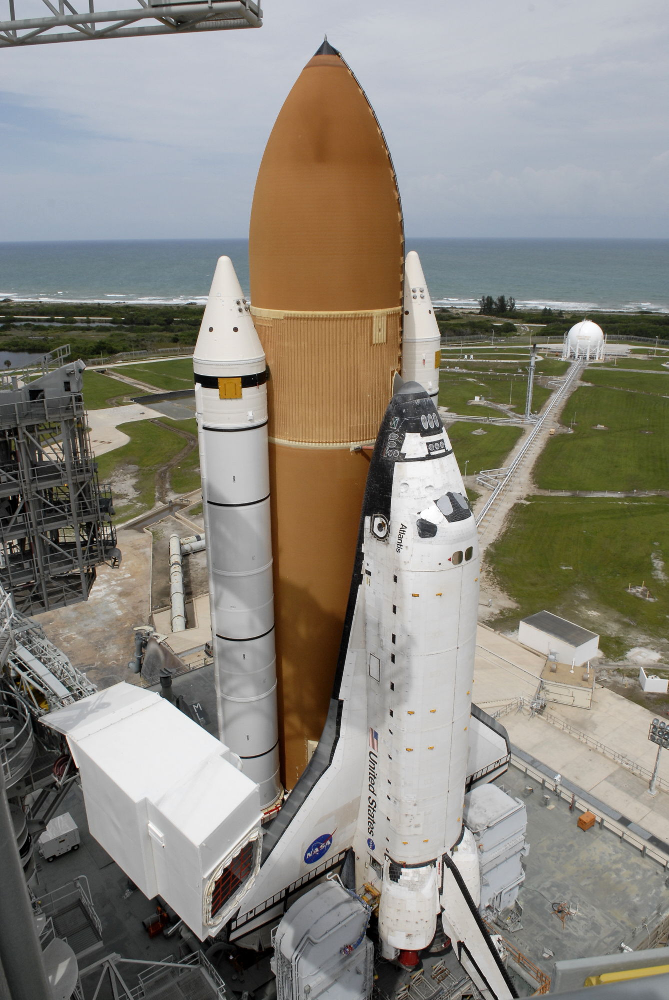
The engineers at Morton Thiokol
who designed the solid rocket boosters for the shuttle
opposed the launch of Challenger and faxed 13 diagrams
to NASA management to make their case - they failed in large
part because of what information they chose to present and
the way they presented that information, but also because of
time and information constraints.
There is a nice overview here:
http://www.nasaspaceflight.com/2007/01/remembering-the-mistakes-of-challenger/
including the following:
‘We discussed what might happen
below our 40 degree qualification temperature and
practically to a man we decided it would be catastrophic,’
added Morton Thiokol's Bob Ebeling.
‘Thiokol recommended that we
could not launch until the weather warmed up in the
afternoon,’ said NASA senior manager Jud Lovingood. ‘Well I
told them they couldn’t make that recommendation. They had
to give us a temperature that we could launch with.’
A formal presentation would have to be made, two hours after
speaking with Lovingood and just 15 hours before launch, via
a teleconference at which Thiokol would need to given their
reasoning for a no launch decision – a power contractors
held, but were scared to make given the effects on the
Shuttle schedule.
Thiokol engineer Roger Boisjoly – one of two specialists
(the other being Arnie Thompson) on the SRB joint seals –
grabbed anything he could from his office to show how the
temperature would lead to a failure of the SRB’s O-ring and
the destruction of the Shuttle.
‘Unfortunately in our rush we didn’t have time for a dry run
at what we’d present to NASA,’ noted Boisjoly. ‘I had no
idea what my colleagues would present and I had no idea what
I’d bring to the meeting.’
‘The entire Thiokol group
recommended no launch,’ remembered Ebeling, as they
recommended a minimum launch temperature of 53F (11C). The
expected rubber stamping of that recommendation was expected
from NASA on the other end of the teleconference. However,
they would be proven wrong.
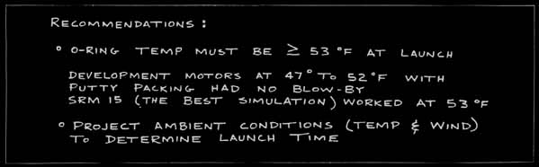
There had been several earlier
flights with O-ring problems and the issues were being
worked through to create a less flawed design, so NASA knew
there were continuing concerns, but the amount of data
available from the 24 previous shuttle flights was limited.
For example the Morton Thiokol engineers did not have
temperature data available for all of the previous shuttle
flights (air temperature, or the much more useful O-ring
temperature.) Seven earlier flights had O-ring issues, and
those launches were at temperatures (F) of 53, 57, 58, 63,
70, 70, 75, and only two of those had serious 'blow by'
issues, one at 53F and one at 75F. There were problems when
it was warm; there were problems when it was cool. No
shuttle had launched below 53 degrees F before.
Mr Mulloy, the Solid Rocket
Booster Project Manager, testified: It was Thiokol's
calculation of what the lowest temperature an O-ring had
seen in previous flights, and the engineering recommendation
was that we should not move outside of that experience base.
Another person present said
"One of my colleagues that was in the meeting summed it up
best. This was a meeting where the determination was to
launch, and it was up to us to prove beyond a shadow of a
doubt that it was not safe to do so. This is in total
reverse to what the position usually is in a pre-flight
conversation or a flight readiness review. It is usually
exactly opposite that."
The key table that the
engineers produced was:
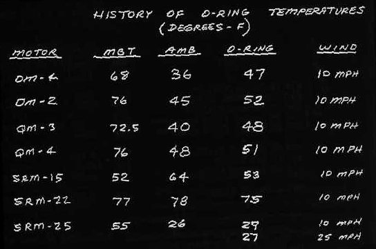
The table shows that there were
problems seen in four rocket tests, and two actual launches,
and then what the assumption would be for the temperatures at
the Challenger launch. This table should also be seen in the
larger context of many years of work between NASA and Morton
Thiokol on the development of the rockets, so everyone
involved in the meeting should have been able to put this data
into context. One thing this table leaves out is data on tests
and launches where there were no problems.
The Rogers Commission shows this data in a graphical form as
well as a revised version which gives context by showing
launches with no problems here
When NASA basically asked Morton Thiokol to prove that it was
unsafe to launch the engineers were given an almost impossible
task given the time and information available to them.
chapter 5 of the Rogers report gives a lot of detail on this.
and there is some interesting
reading here:
http://history.nasa.gov/rogersrep/v4p740.htm
and some of the findings:
l. The Commission concluded that there was a serious flaw in the
decision making process leading up to the launch of flight 51-L.
A well structured and managed system emphasizing safety would
have flagged the rising doubts about the Solid Rocket Booster
joint seal. Had these matters been clearly stated and emphasized
in the flight readiness process in terms reflecting the views of
most of the Thiokol engineers and at least some of the Marshall
engineers, it seems likely that the launch of 51-L might not
have occurred when it did.
4. The Commission concluded that the Thiokol Management reversed
its position and recommended the launch of 51-L, at the urging
of Marshall and contrary to the views of its engineers in order
to accommodate a major customer.
Back to Tufte:
Even after the disaster and the during the investigation when
there was more time and more information available bad graphics
were still being created. Looking at the O-Ring damage over the
previous 24 shuttle missions, the data was presented in
chronological order showing the location and extent of the
damage sustained to the left and right boosters and the
temperature at launch time. This hides the pattern.

If instead of using chronological
order the same data was presented in ascending temperature
order the pattern is a bit more clear
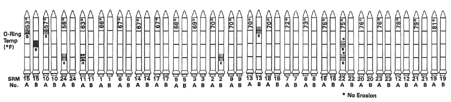
If instead we remove all the extraneous imagery and do
a simple plot of temperature vs damage (a weighted average of
erosion, heating, and blow-by) as shown below then the pattern
becomes much clearer which is the point that Tufte stresses.
This chart is almost the same as the revised Rogers Commision
chart in pdf form above.
To really do analysis you would still want to be able
to get access to the more detailed data - this just gives you a
nice overview.
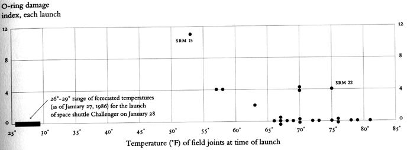
(note that 15 and 22 mentioned in the original memo are
highlighted in this chart)
The
Rogers Commission report on the Challenger can be found at:
http://history.nasa.gov/rogersrep/genindex.htm
Discussion
of Columbia disaster in 2003 with refs from Tufte's "Beautiful
Evidence" - how you organize, present text, and choose words
can be just as dangerous as how you present graphical
information. Do all of the necessary words even fit readably
on a PowerPoint slide?
Unlike Challenger, this time the issue was less about what the
engineers knew and more about what they did not know and their
inability to convince their managers to get them more
information from the astronauts in space or department of
defense imagery.
The
results of an analysis needed to be succinctly presented in a
report or set of PowerPoint slides, with the bulk of the
analysis sitting in a very big report that may not be read.
Tufte spends a fair amount of time in this book talking about
the dangers inherent in a PowerPoint presentation.
http://www.edwardtufte.com/bboard/q-and-a-fetch-msg?msg_id=0001yB&topic_id=1&topic=Ask+E%2eT%2e
first a bit of background from the Columbia report
which we will hit the highlights of ...
"Columbia was launched from Launch Com- plex 39-A on
January 16, 2003, at 10:39 a.m. Eastern Standard Time (EST). At
81.7 seconds after launch, when the Shuttle was at about 65,820
feet and traveling at Mach 2.46 (1,650 mph), a large piece of
hand-crafted insulating foam came off an area where the Orbiter
attaches to the External Tank. At 81.9 seconds, it struck the
leading edge of Columbiaʼs left wing. This event was not
detected by the crew on board or seen by ground support teams
until the next day, during detailed reviews of all launch camera
photography and videos. This foam strike had no apparent effect
on the daily conduct of the 16-day mission, which met all its
objectives."
"Post-launch photographic analysis showed that one
large piece and at least two smaller pieces of insulating foam
separated from the External Tank left bipod (–Y) ramp area at
81.7 seconds after launch. Later analysis showed that the larger
piece struck Columbia on the underside of the left wing, around
Reinforced Carbon-Carbon (RCC) panels 5 through 9, at 81.9
seconds after launch (see Figure 2.3-2). Further photographic
analysis conducted the day after launch revealed that the large
foam piece was approximately 21 to 27 inches long and 12 to 18
inches wide, tumbling at a minimum of 18 times per second, and
moving at a relative velocity to the Shuttle Stack of 625 to 840
feet per second (416 to 573 miles per hour) at the time of
impact."

"The objectʼs large size and the apparent momentum
transfer concerned Intercenter Photo Working Group personnel,
who were worried that Columbia had sustained damage not
detectable in the limited number of views their tracking cameras
captured. This concern led the Intercenter Photo Working Group
Chair to request, in anticipation of analystsʼ needs, that a
high-resolution image of the Orbiter on-orbit be obtained by the
Department of Defense. By the Boardʼs count, this would be the
first of three distinct requests to image Columbia on-orbit. The
exact chain of events and circumstances surrounding the movement
of each of these requests through Shuttle Program Management, as
well as the ultimate denial of these requests, is a topic of
Chapter 6."
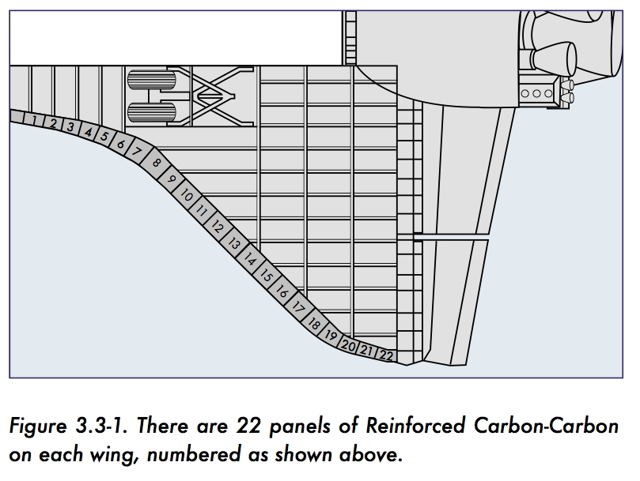
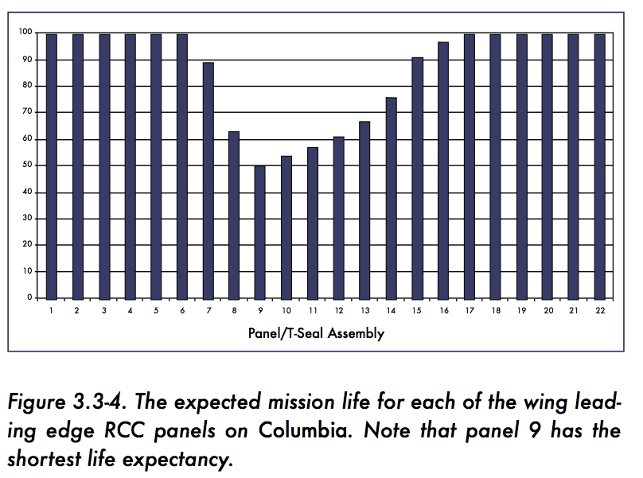
"Without on-orbit pictures of Columbia, the Debris
Assessment Team was restricted to using a mathematical modeling
tool called Crater to assess damage, although it had not been
designed with this type of impact in mind. Team members
concluded over the next six days that some localized heating
damage would most likely occur during re-entry, but they could
not definitively state that structural damage would result. On
January 24, the Debris Assessment Team made a presentation of
these results to the Mission Evaluation Room, whose manager gave
a verbal summary (with no data) of that presentation to the
Mission Management Team the same day. The Mission Management
Team declared the debris strike a “turnaround” issue and did not
pursue a request for imagery."
"Boeing analysts conducted a preliminary damage
assessment on Saturday. Using video and photo images, they
generated two estimates of possible debris size – 20 inches by
20 inches by 2 inches, and 20 inches by 16 inches by 6 inches –
and determined that the debris was traveling at a approximately
750 feet per second, or 511 miles per hour, when it struck the
Orbiter at an estimated impact angle of less than 20 degrees.
These estimates later proved remarkably accurate."
"To calculate the damage that might result from such a
strike, the analysts turned to a Boeing mathematical modeling
tool called Crater that uses a specially developed algorithm to
predict the depth of a Thermal Protection System tile to which
debris will penetrate. This algorithm, suitable for estimating
small (on the order of three cubic inches) debris impacts, had
been calibrated by the results of foam, ice, and metal debris
impact testing. "
"Until STS-107, Crater was normally used only to
predict whether small debris, usually ice on the External Tank,
would pose a threat to the Orbiter during launch. Engineers used
Crater during STS-107 to analyze a piece of debris that was at
maximum 640 times larger in volume than the pieces of debris
used to calibrate and validate the Crater model (the Boardʼs
best estimate is that it actually was 400 times larger)."
"For the Thermal Protection System tile, Crater
predicted damage deeper than the actual tile thickness. This
seemingly alarming result suggested that the debris that struck
Columbia would have exposed the Orbiterʼs underlying aluminum
airframe to extreme temperatures, resulting in a possible
burn-through during re-entry. Debris Assessment Team engineers
discounted the possibility of burn through for two reasons.
First, the results of calibration tests with small projectiles
showed that Crater predicted a deeper penetration than would
actually occur. Second, the Crater equation does not take into
account the increased density of a tileʼs lower “densified”
layer, which is much stronger than tileʼs fragile outer layer.
Therefore, engineers judged that the actual damage from the
large piece of foam lost on STS-107 would not be as severe as
Crater predicted, and assumed that the debris did not penetrate
the Orbiterʼs skin."
"Prior to STS-107, Crater analysis was the
responsibility of a team at Boeingʼs Huntington Beach facility
in California, but this responsibility had recently been
transferred to Boeingʼs Houston office. Even though STS-107ʼs
debris strike was 400 times larger than the objects Crater is
designed to model, neither Johnson engineers nor Program
managers appealed for assistance from the more experienced
Huntington Beach engineers, who might have cautioned against
using Crater so far outside its validated limits. Nor did safety
personnel provide any additional oversight. NASA failed to
connect the dots: the engineers who misinterpreted Crater – a
tool already unsuited to the task at hand – were the very ones
the Shuttle Program identified as engendering the most risk in
their transition from Huntington Beach."
"Columbia re-entered Earthʼs atmosphere with a
pre-existing breach in the leading edge of its left wing in the
vicinity of Reinforced Carbon-Carbon (RCC) panel 8. This breach,
caused by the foam strike on ascent, was of sufficient size to
allow superheated air (probably exceeding 5,000 degrees
Fahrenheit) to penetrate the cavity behind the RCC panel. The
breach widened, destroying the insulation protecting the wingʼs
leading edge support structure, and the superheated air
eventually melted the thin aluminum wing spar. Once in the
interior, the superheated air began to destroy the left wing."
"By the time Columbia passed over the coast of
California in the pre-dawn hours of February 1, at Entry
Interface plus 555 seconds, amateur videos show that pieces of
the Orbiter were shedding. Analysis indicates that the Orbiter
continued to fly its pre-planned flight profile, although, still
unknown to anyone on the ground or aboard Columbia, her control
systems were working furiously to maintain that flight profile.
Finally, over Texas, just southwest of Dallas-Fort Worth, the
increasing aerodynamic forces the Orbiter experienced in the
denser levels of the atmosphere overcame the catastrophically
damaged left wing, causing the Orbiter to fall out of control at
speeds in excess of 10,000 mph."
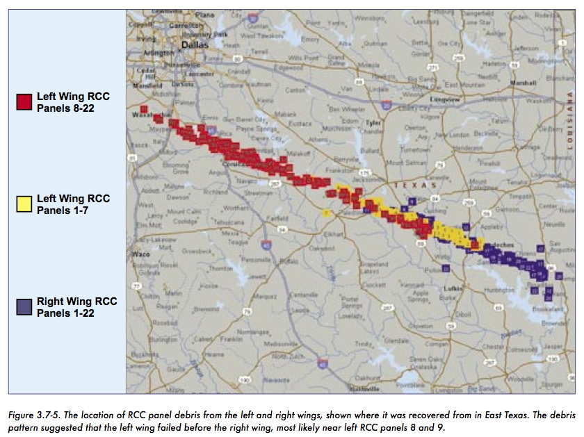
and for a bit of perspective:
One debris strike in particular foreshadows the
STS-107 event. When Atlantis was launched on STS-27R on December
2, 1988, the largest debris event up to that time significantly
damaged the Orbiter. Post-launch analysis of tracking camera
imagery by the Intercenter Photo Working Group identified a
large piece of debris that struck the Thermal Protection System
tile at approximately 85 seconds into the flight. On Flight Day
Two, Mission Control asked the flight crew to inspect Atlantis
with a camera mounted on the remote manipulator arm, a robotic
device that was not installed on Columbia for STS-107. Mission
Commander R.L. “Hoot” Gibson later stated that Atlantis “looked
like it had been blasted by a shotgun.”18 Concerned that the
Orbiterʼs Thermal Protection System had been breached, Gibson
ordered that the video be transferred to Mission Control so that
NASA engineers could evaluate the damage.
When Atlantis landed, engineers were surprised by the
extent of the damage. Post-mission inspections deemed it “the
most severe of any mission yet flown.” The Orbiter had 707
dings, 298 of which were greater than an inch in one dimension.
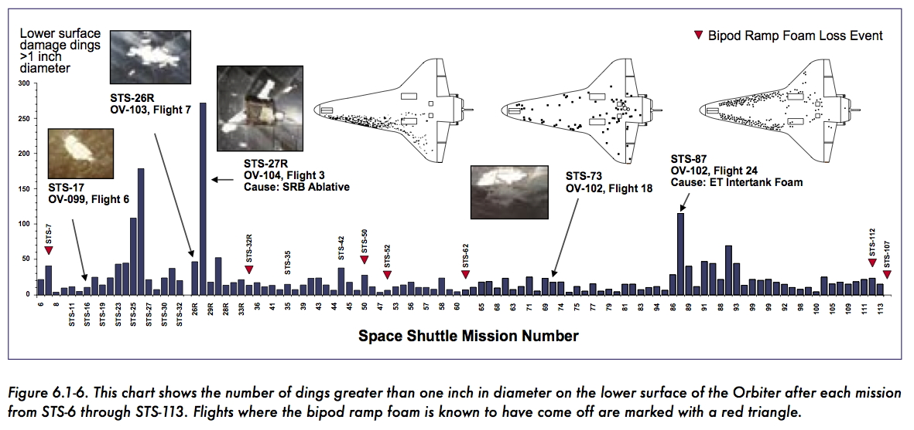
Below is the Tufte analysis of the powerpoints used by
the Debris Assessment Team, which is also part of the official
report:
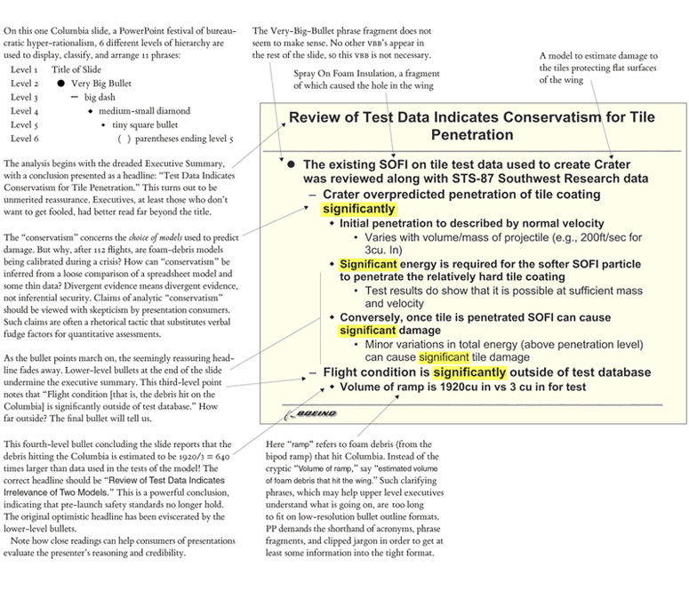
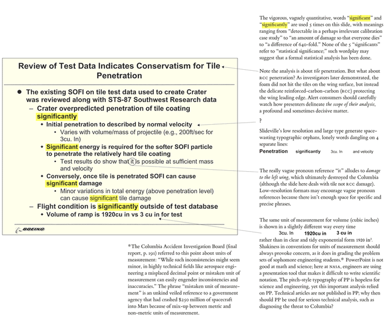
again from the report:
"As information gets passed up an organization
hierarchy, from people who do analysis to mid-level managers to
high-level leadership, key explanations and supporting
information is filtered out. In this context, it is easy to
understand how a senior manager might read this PowerPoint slide
and not realize that it addresses a life-threatening situation."
"At many points during its investigation, the Board
was surprised to receive similar presentation slides from NASA
officials in place of technical reports. The Board views the
endemic use of PowerPoint briefing slides instead of technical
papers as an illustration of the problematic methods of
technical communication at NASA."
The complete Columbia report can be found at http://caib.nasa.gov/
http://caib.nasa.gov/news/report/pdf/vol1/full/caib_report_volume1.pdf